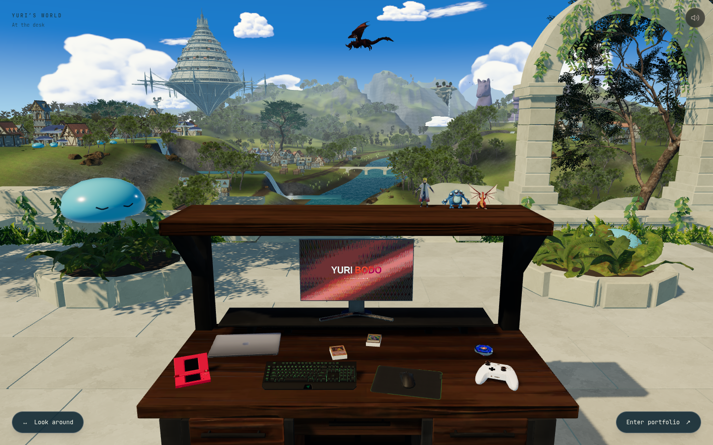
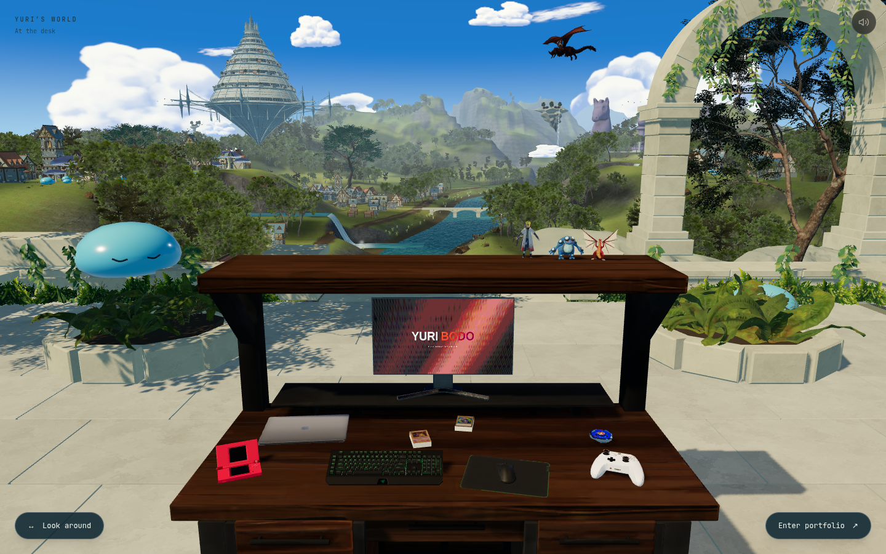

Skybound · At the desk
Bosques nas encostas do vale.
Grupos de árvores acompanham as elevações dos dois lados. Coníferas, arbustos e rochas conectam a vegetação às montanhas, com clareiras entre os bosques e pedra exposta nas áreas mais altas.


Esta revisãoAntesAbrir print completo · Abrir o site local · Registro técnico
A composição da mesa, os slimes e o dragão permanecem na versão aprovada. Os novos grupos reutilizam os mesmos modelos e materiais da paisagem.